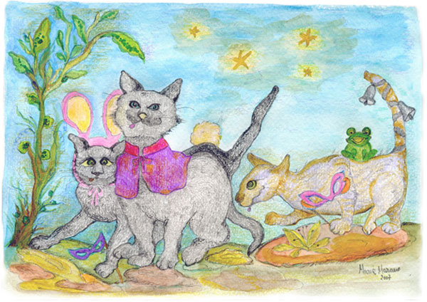

Un ballo in maschera
Si stava organizzando un’allegra serata
Con annessa e concessa anche una mascherata
Fra lazzi, frizzi, botti e qualche sghignazzata
Nella vecchia topaia adibita a fienile
D’un vecchio educandato d’anteguerra
Sempre e severamente femminile.
Ormai obsoleto e abbandonato era ricetto il luogo
Di cani spelacchiati i giorni pari
Mentre i festivi e i dispari ci potevi trovare
Un gruppo di compari
Che lieti strimpellavan con gran vanto
Provando tutti assieme qualche canto.
Un trio di cialtroni gorgheggianti
S’innaffiavano persino di vinsanto,
Rubato ad una monaca portiera
Per ristorare i chierici vaganti.
Avevano promesso i tre furfanti
Di starsene lontani dalla festa
Onde non inquietare le distinte invitate
Sia quelle da marito che l’altre più attempate.
Per starsene tranquilli ed alla larga
I tre furbi cantanti avevano riscosso già un pedaggio
E per il lieto party ad un cane pianista avean dato l’ingaggio
D’allietare la festa e il vicino villaggio.
Venne assemblata dunque una vecchia pagoda
Che presto il sembiante assunse di piano con la coda.
La coda era quella d’un vecchio can barbone
Che agitava l’appendice a ogni lieta occasione.
Addobbata la sala, rinfrescato il giardino
I tre in un cantuccio inizian a uccellare più vicino.
Nespolo lo giullare da un muro sta a guardare
Poldo quello grigiastro con muso da ribaldo
Si sporge su Cuccagna che a ragione si lagna.
E scesa ormai la sera, di profumi foriera
L’inclito pubblico, la colta guarnigione
Ben presto s’appropinquano all’antica magione.
L’entrata trionfale spetta alla Badessa, la stagionata Mommy
Che trafugata una stola per la messa
Di Castiglione pareva la contessa.
L’accompagna severa Genoveffa
La gatta di cui niuno si fa beffa
Che avendo solo un occhio parea così conciata
Da pirata malese… ed è pure ammirata la cortese…
Sventaglia la piratessa, con uno scacciamosche la Badessa
Spacciando quelle due l’infame arnese
Per un ventaglio fine d’origine cinese, spagnolo oppur giamaicano
Ma in tutti i casi forse dipinto a mano.
La singolare coppia aprì così le danze
Strabiliando dei presenti le raffinate panze.
Con tunichetta corta e coturni romani
Olivia che è pure poliglotta
Per dirla proprio tutta pareva una mignotta.
Conduce essa una biga guidata da somari
Che a uno sguardo più attento paiono i tre compari…
Ma si! I neri Nespolo e Cuccagna con Poldo stipato nel portabagagli
Che simulano il trotto ed anche i ragli.
I tre malcapitati di straforo cinti aveansi le code
Con verdi foglie d’alloro
Per camuffare la vera identità
E godersi la vista di cotante beltà.
Seguia le pie graziose, che intanto s’innaffiavan di gazzose
Un allegro corteo medievale un po’ alla Carmina Burana
Con qualche topo perplesso appeso alla sottana.
Ma, si sa… pur di fare “pendant“ un topo è l’ideale appeso alla “mutand”.
Insomma l’eleganza si sprecava
E “lo Dolce Stil Novo” timidamente già si declamava.
Il pianista intanto mentre con una zampa s’ingozzava
Con l’altra, quella libera di triglie si spalmava
Suscitando entusiasmo e qualche battimano
Mentre un serio invitato gli dava del villano.
Un gruppo variegato e incasinato
S’esibiva intanto sul vicino prato
Fra gighe, sarabande e contradanze
Ballavano persino le pulci sulle panze.
Clotino Rosicante che l’abito indossava da Compare Turiddu
Faceva da cantante e Jessi, la sua pupilla pareva Donna Lola
E con la coda s’esibiva facendo pure “l’ola”.
Della bella tarantella siciliana
In cui la Jessi perse la sottana
E Clotino s’allitrò un quartin di vino
Venne ripreso un “live” per beneficenza
A favore dei gatti che soffron di diarrea e pur d’inappetenza…
Ma in ogni festa c’è sempre un rompiballe, un fetente
Un pezzo di furfante agitatore
Per dirla proprio tutta… un guastatore.
Un nome familiare, Nespolo lo giullare.
Vedendo le donzelle e i saltimbanco volteggiare
Nespolo e i due compari, nelle vesti ormai note di somari
Si ritrovano la festa a desiare…ma come fare?
Come partecipare?…… senza due calci in coda rimediare…
Così tanto per accettare?……
Nespolo provvisto di zampogna e il grigio Poldo
Col Cucca suo compare fanno il loro ingresso trasognati
Spacciandosi per gatti altolocati per l’occasione
Da somari addobbati.
E poiché il travestimento era perfetto
Proprio a niuno balenò un sospetto.
La furba Mommy però poco convinta
E con un dente come al solito di fuori
Al riguardo di quegli aristocratici signori
Di nascosto se li segna mentre danza
Dandosi una grattata sulla panza.
E per mostrar indifferenza e far finta di niente
Col gambo di un trifoglio si ripulisce il dente.
Ma ecco! …orrore!!!! …come lei paventava
E anche temeva… mentre dopo una giravolta sopra un topo
Lievemente planava scorge i tre buffardeci
Zitti come segugi addentare una seppia dal buffet
E immantinente dopo …papparsi tre budini per dessert.
E con l’unghia li segna e poi esclama sollevando di colpo la sottana:
“Attenti!!! Aiuto!!!!! Quei tre di nobile partito hanno ben poco
soltanto un forsennato e atavico appetito!”
Compare Turiddu Cloti e Jessi Donna Lola
Che s’inseguivano allegri sull’aiuola
Accorrono filati a quel richiamo
Veloce il primo e l’altra con la coda in mano
Per dare manoforte alla Badessa
Mentre intanto dilagavan botte e ressa.
La vecchia nobilgatta con nella zampa ancor lo scacciamosche
Si da all’inseguimento di quelle code losche.
Intanto in lontananza un gruppo mascherato un pò in ritardo
Per colpa di uno sciopero ad oltranza
Di navi, treni, vigili e Finanza
Allegro a suon di samba s’appropinqua alla danza.
A causa per l’appunto del ritardo
Scambiano quelli la vergognosa rissa
Per fuochi d’artificio col petardo.
Il capo brasileiro con quattro penne in testa
E un tamburello in mano come si converrebbe ad un vero sciamano
È il bianco e nero Opossum
Che in testa a quella pittoresca e fragorosa cavalleria
S’appresta a menar tutti per aggiungere un tocco d’allegria.
Assieme a Punkia, da soldato sudista acconciato
Che tanto per cambiare ha lo sguardo assonnato
Milvo, un pò in disparte come un circense gatto
Fa giochi con le carte.
Ma ahimè! ……quando i cavalleggeri
S’accorgon dei giullari che rubano e divorano la trippa
Danno manforte a Mommy e la sua truppa
Che a destra e a manca mena col ventaglio
quasi che quell’arnese fosse un sonaglio.
Che infame mascherata, anche per questa volta è fatta la frittata.
Clotin-Turiddu e Jessi-Donna Lola intanto
Sopra la tavola imbandita saltellano abbracciati una tarantolata
Mentre il resto del coro battendo sulle zampe
Intona delle mondine un canto
All’udire il quale ancor oggi m’incanto.
Ricordo il motivetto e il ritornello
E quelle soavi note sembrano uno stornello.
“Picchiam lo Nespolaooooooo
che meraviglia Nespolao Meravigliaooooo
e poi lo Cuccagnaooooo
sopra la coda Cuccagnao Meravigliaooooo
e infine lo Poldaoooooooooo
tiriamo i baffi allo Poldao Meravigliaoooo
Poldao Poldao Poldao…
Che meraviglia sto Poldao Meravigliao!”
Epilogo
Nel vecchio educandato femminile
Adibito a salone per le danze
I tre furbi cialtroni vestiti da signori altolocati
Confessarono alfine quella beffa
E come ambasciatrice Genoveffa
Convinse i tre fetenti a fare ammenda
Mettendogli sul muso una benda
E li costrinse a far la “moscacieca”
Mentre la pia Badessa sedando quella ressa
Col vecchio scacciamosche
Ben ben li sventagliava e li menava
E tutti insieme un samba si ballava.
La goliardica impresa venne pure ripresa
Da una TV locale e se hai un satellite
Te la puoi pure comprare……
E adesso cani e gatti dei cinque continenti
Se la ridon di cuore con tutti quanti i denti
Alla vista del gruppo dei fetenti… suonati ma contenti…
Suscitando ammirazione e commozione e ahimè…
Pare e si dice…………
Persino emulazione……
M.J.M
23 Giugno 2007